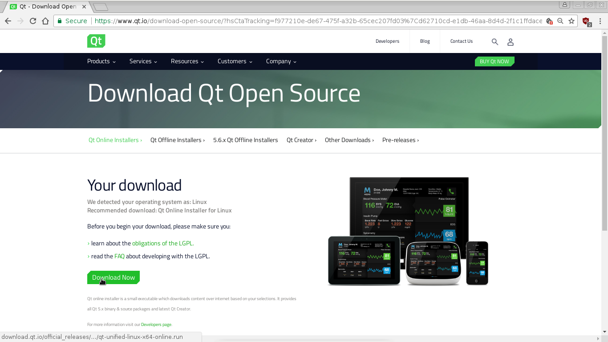
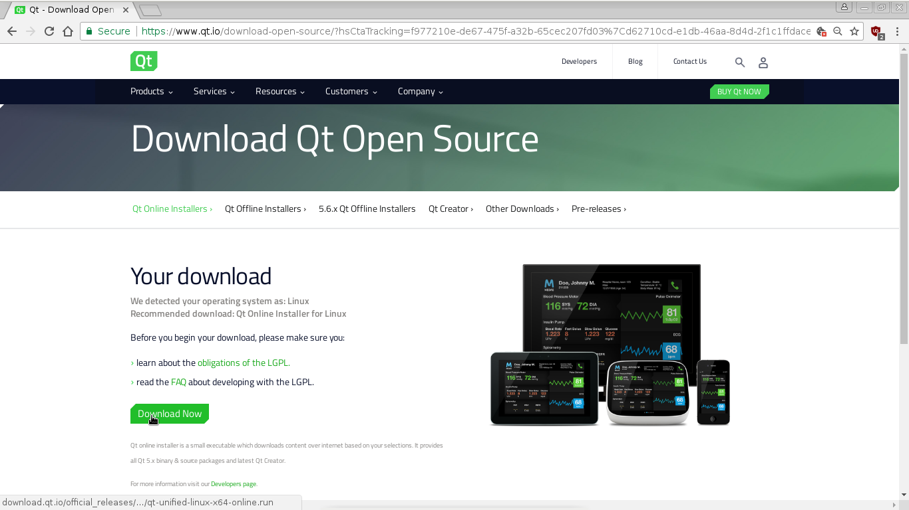
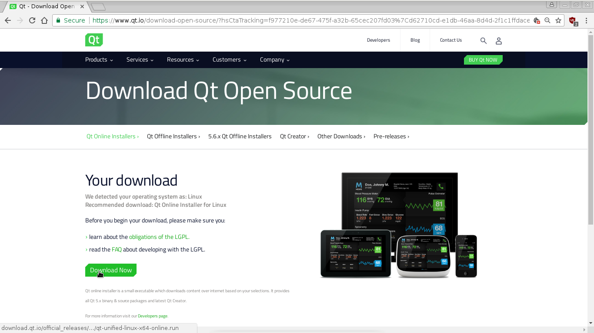

Documentation projet plateforme accélérométrique et gyroscopique
Installer Qt
Antonin HÉRÉSON & Marly BALDE
Juin 2017
Ce document a pour but de vous guider dans l’installation de Qt.
Qt est installable sous trois plateformes:
▶Windows
▶Macintosh
▶Linux
Nous allons voir comment installer suivant l’Os choisi
Table of Contents
1 Pré-installation
1.1 Linux (à l’aide du terminal)
Pour installer les compilateurs
-
sudo apt-get install g++ gcc
Pour installer git (optionnel)
-
sudo apt-get install git gitk
Pour une installation plus propre, on vous propose d’installer dans “opt” qui est le dossier réservé aux installations externes. Pour cela nous allons créer un dossier dans “opt”, et donner les droits à l’utilisateur final.
-
sudo mkdir /opt/Qt
-
sudo chown <yourID> /opt/Qt/
1.2 Macintosh
Il faut installer Xcode, disponible dans l’appstore de mac, puis le lancer une fois. ( Il n’est pas nécessaire de l’ouvrir à chaque utilisation, une première fois lors de l’installation suffit)
1.3 Windows
Aucune pré-installation n’est nécessaire
2 Télécharger le logiciel
Rendez vous sur le site de qt : www.qt.io et téléchargez Qt creator
- Rendez vous sur Qt et cliquez sur download Qt
- Choisissez la version desktop
- Choisissez la version open source
- Et vous pouvez télécharger le Qtcreator correspondant à votre Os
1.
2.
3. 4. 
4. 
4. 
-
chmod +x qt-unified-linux-XXX
3 Installation
Nous allons maintenant voir pas à pas l’installation de Qt. Pour lancer l’installeur cliquez dessus.
Note configuration d’un proxy peux être nécessaire.
Vous allez maintenant choisir le répertoire de votre choix
Pour Linux nous vous conseillons /opt/Qt et pour Windows le répertoire ou sont stockés les programmes

Il faut maintenant choisir les composants à installer.
L’installation par défaut convient. Nous avons utilisé la version 4.9 de Qt.
Nous utilisation pas de modules complémentaires proposés.
L’installation par défaut convient. Nous avons utilisé la version 4.9 de Qt.
Nous utilisation pas de modules complémentaires proposés.
Linux/Windows Vous pouvez maintenant démarrer l’environnement de développement
Macintosh Vous devez faire glisser l’exécutable dans le dossier application
L’installation est finie. S’il vous manque un composant ou pour une mise à jour vous pouvez utiliser le Maintenance Tools installé avec Qtcreator
Retour au sommaire principal
Retour au sommaire principal